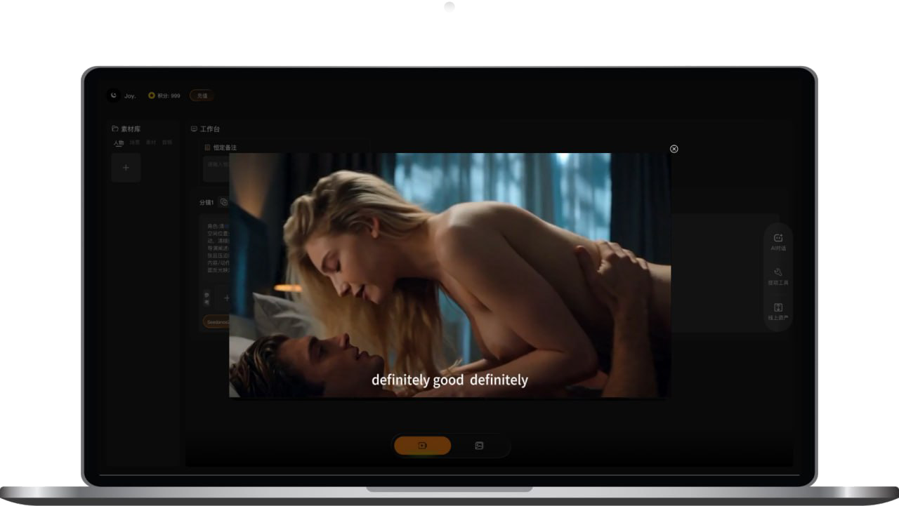
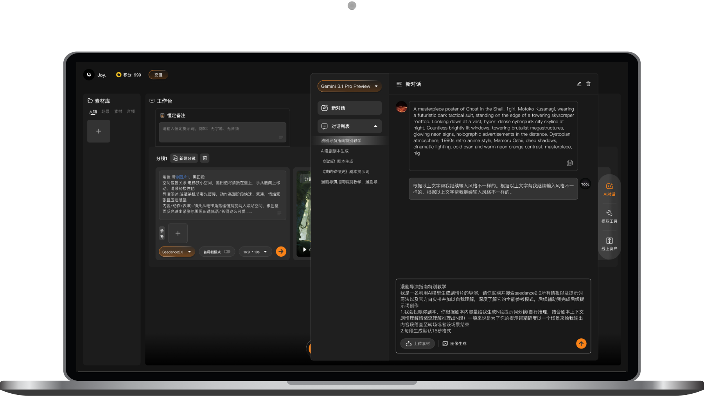
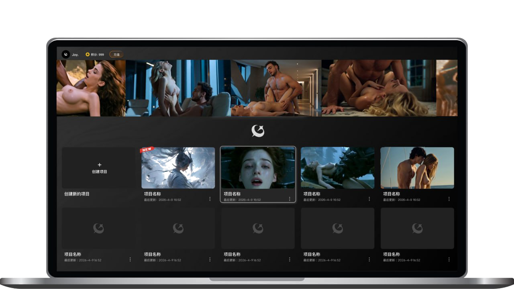

Tool 是新一代AI短剧创作平台，也是一站式AI短剧制作工具。把你的创意输入进去，AI就能快速生成画面精美、情节动人的高品质短剧，让你的创作灵感即刻落地。
强大的AI创作能力，为创作者提供专业级短剧自动生成工具
基于先进的AI模型，自动生成高清晰度、画面流畅的短剧，人物动作与场景细节自然逼真。
专业级短剧分镜编辑器，自由调整每个镜头的角度、节奏和时长，精准控制画面呈现。
深度定制角色形象、表情与动作，保持角色一致性，打造专属于你的剧中角色。
AI配音与背景音乐一键生成，让每一帧画面都声情并茂，观感沉浸。
内置大量创作模板和教程，快速上手，帮你高效产出高品质的短剧作品。
支持高清视频、竖版短视频、GIF等多种格式，轻松发布到各大平台。
把创意瞬间变成精彩短剧。只需输入一段剧情，AI就能自动生成情节紧凑的短剧视频，支持多种风格。

智能AI助手，让创作更轻松。Tool内置专业的短剧AI助手，提供剧情生成、提示词优化、节奏控制等支持。

提供强大的项目管理功能，所有短剧项目一目了然，支持继承复用经典桥段，快速批量生产系列短剧。

简单四步，快速做出精彩的AI短剧，无需专业技能，轻松上手
新建项目，选择你喜欢的风格和玩法
用AI生成完整剧本和详细分镜
一键生成，AI自动呈现精彩画面
满意后导出，发布到平台
AI短剧创作技巧、使用教程、行业资讯——一页掌握
对于刚开始接触 AI 创作工具的朋友来说，{kw}可能还比较陌生。本文将用通俗易懂的方式，带你了解{kw}的使用方法。{……
阅读全文 → 教程在众多 AI 创作工具中，{kw}备受用户关注。本文将从功能、体验、适用性等角度，对{kw}进行客观评测。{kw}功能概……
阅读全文 → 教程对于刚开始接触 AI 创作工具的朋友来说，{kw}可能还比较陌生。本文将用通俗易懂的方式，带你了解{kw}的应用方法。{……
阅读全文 → 教程在众多 AI 创作工具中，{kw}备受用户关注。本文将从功能、体验、适用性等角度，对{kw}进行客观评测。{kw}功能概……
阅读全文 → 教程在众多 AI 创作工具中，{kw}备受用户关注。本文将从功能、体验、适用性等角度，对{kw}进行客观评测。{kw}功能概……
阅读全文 → 教程近年来，AI 生成技术在内容创作领域快速发展，{kw}逐渐成为越来越多创作者关注的工具。本文将为你全面解析{kw}的相关……
阅读全文 → 教程近年来，AI 生成技术在内容创作领域快速发展，{kw}逐渐成为越来越多创作者关注的工具。本文将为你全面解析{kw}的相关……
阅读全文 → 教程近年来，AI 生成技术在内容创作领域快速发展，{kw}逐渐成为越来越多创作者关注的工具。本文将为你全面解析{kw}的相关……
阅读全文 → 教程近年来，AI 生成技术在内容创作领域快速发展，{kw}逐渐成为越来越多创作者关注的工具。本文将为你全面解析{kw}的相关……
阅读全文 →